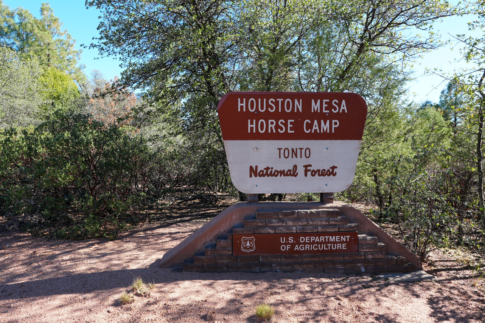
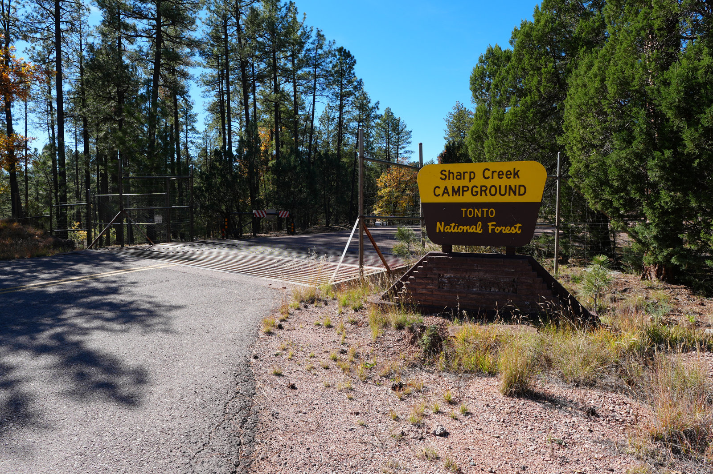
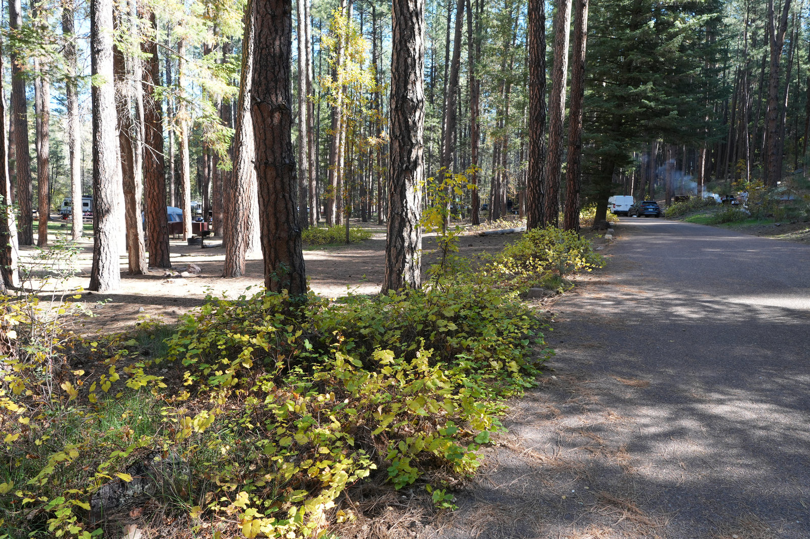
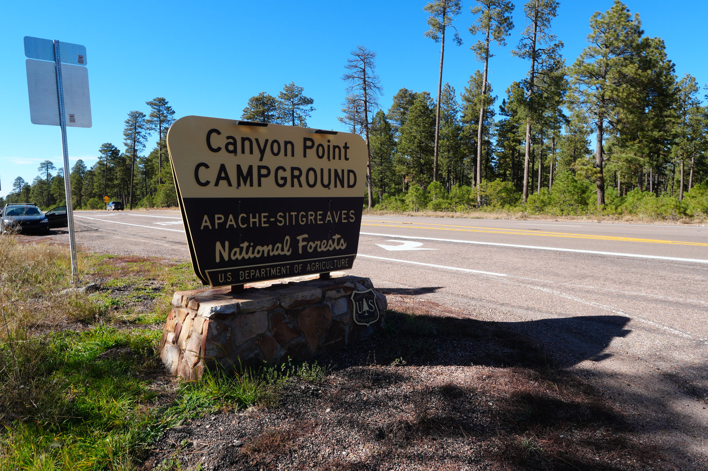

Houston Mesa Campground
A big developed campground just north of Payson, useful when the win is easy arrival, town backup, bathrooms, water, and a site you can use without a production.
 By Chris Follin
By Chris FollinROUNDUP
A Phoenix weekend camp has a narrow job: get you out of the Valley, change the air, and avoid turning Saturday into a logistics punishment. These are the places I would sort first when the trip has to fit between work, heat, traffic, reservation pressure, and the need to come home with some energy left.
From Phoenix, the easy camping map usually splits three ways: north to Payson for the shortest practical escape, east along the Rim for cooler pines and lake access, or northwest toward Mingus and the Verde Valley when town backup and shoulder-season weather matter. The best choice depends less on the prettiest photo and more on when you can leave, how hot the forecast is, and how much campground structure you want after dark.

A big developed campground just north of Payson, useful when the win is easy arrival, town backup, bathrooms, water, and a site you can use without a production.

A 6,000-foot pine campground east of Payson with Christopher Creek nearby, smaller loops, and the kind of shade that helps a Friday-night escape feel earned.

The lively Payson creek pick: easy to like, easy to fill, and better for families or social weekends than for anyone chasing silence.

The obvious Rim answer for a reason: pine air, a 50-acre lake, a loop trail, boat rentals nearby, and enough popularity that planning ahead is part of the deal.

A larger Mogollon Rim campground with some electric sites, showers, trails from camp, and Willow Springs Lake close enough to make it an easy basecamp.

A cooler Mingus Mountain option with ponderosa forest, drinking water, toilets, and a different weekend rhythm than the usual Highway 260 run.
This is the sorting table I would use before reserving anything for a two-night Phoenix weekend.
| Camp | Best Weekend Use | Drive Burden | Services | Heat Relief | Crowd Risk | Watch For |
|---|---|---|---|---|---|---|
| Houston Mesa | Simple developed camping close to Payson | Lowest-stress Payson run; Forest Service notes it is less than two hours from Phoenix | Potable water, restrooms, picnic tables, equestrian loops, town one mile south | Moderate; 5,100-foot elevation helps, but it is not deep Rim cool | Medium; big campground, practical choice, easy access | More useful than scenic; choose your loop carefully |
| Sharp Creek | Quick pine-shade escape east of Payson | Still weekend-friendly; about 23 miles northeast of Payson | 28 standard sites, group sites, potable water, restrooms, tables, grills | Good; 6,000 feet, ponderosa forest, creek country nearby | Medium; small campground and easy location can fill | Some sites fit smaller rigs better; verify seasonal status before leaving |
| Christopher Creek | Creekside family or social weekend | Easy Payson-to-260 extension; about 21 miles east of Payson | Potable water, restrooms, picnic tables, grills, fire pits | Good; around 5,600 feet with creekside shade | High; Forest Service calls it one of the most popular Payson sites | Not the quiet pick; expect neighboring camps and kid energy |
| Woods Canyon Lake | Classic Rim lake weekend | Longer than Payson proper, but still a standard Phoenix escape route | Nearby store, marina, boat rentals, restrooms, potable water in the area | Strong; pine forest, lake access, Rim elevation | High; official guidance notes it is very popular in summer | Reserve early, plan for parking pressure, and carry layers for quick weather shifts |
| Canyon Point | Built-out Rim basecamp with easier amenities | Longer Rim push; near Highway 260 and Willow Springs Lake | 103 sites, 32 electric sites, showers, restrooms, potable water, trails from camp | Strong; 7,500 feet in ponderosa forest | Medium-high; size helps, amenities draw people | Afternoon monsoon storms and cold nights can surprise summer campers |
| Potato Patch | Mingus Mountain change-up from the Payson/Rim pattern | Different drive corridor; winding paved mountain road near Jerome | Picnic tables, grills, fire pits, toilets, drinking water, some RV electric sites | Good seasonal relief; ponderosa forest and cool summer temperatures | Medium; fewer sites than the big Rim campgrounds | Seasonal May-October window, winding road, no RV tank filling from site water |
The fastest way to pick is to be honest about the trip you are willing to do after a normal week.
HOUSTON MESA
Choose: you want the easiest developed Payson weekend with town close enough to fix small mistakes. Skip: you need the campsite itself to feel remote, scenic, or special.
SHARP CREEK
Choose: pines, a smaller campground, and creek-country access are enough to change the weekend. Skip: you need big-rig certainty or a late-arrival guarantee.
CHRISTOPHER CREEK
Choose: you are bringing kids, friends, or anyone who will use the creek setting more than they will complain about neighbors. Skip: the goal is quiet reading and distance from other camps.
WOODS CANYON
Choose: the trip needs pines, water, walking, fishing, and a familiar Rim feel. Skip: you are planning last-minute during prime summer weekends or hate parking pressure.
CANYON POINT
Choose: showers, some electric sites, bigger loops, trails, and nearby lake access make the weekend easier. Skip: you want a small campground or minimal campground activity.
POTATO PATCH
Choose: you want Mingus Mountain pines, cooler seasonal air, and a break from the usual Payson/Rim loop. Skip: the winding road, seasonal access, or limited site count adds too much uncertainty.